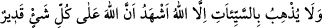

vazgeçmezseniz, andolsun sizi taşlarız. Ve bizden size mutlaka fena bir kötülük
dokunur.” dediler.
Çıkış yolları daralıp ileri sürecekleri mazeretleri kalmayınca “(Bunun üzerine
onlar:) “Doğrusu siz bize uğursuz geldiniz” dediler.
“ kelimesinin asıl mânâsı kuşları hayra yormak/uğur saymak demektir. Çünkü
Araplar kişinin sol tarafından gelip sağ tarafına doğru giden kuşun hayra sebep
olduğunu, sağ tarafından gelip sol tarafına giden kuşun ise şerre sebep olduğunu iddiâ
ederlerdi. Nitekim bu husus Neml sûresinde (27/47) geçmişti. Sonra bu kelime uğursuz
sayılan herşey için kullanılmıştır.
Yâni onlar, câhillerin âdeti üzere siz bize uğursuzluk getirdiniz, dediler. Çünkü onlar
her türlü şer ve vebâle sebep olsa da kendi nefsânî arzularına uygun olan her şeyi uğurlu
sayarlardı. Dünya ve âhiret mutluluğunu peşinden getirse bile nefsânî arzularına uygun
olmayanı uğursuz sayarlardı.
Nakşibendî der ki: “Sizin gelmenizle biz uğursuzluğa uğradık/ayağınız uğursuz geldi.
Çünkü siz bizim yurdumuza geldiğinizden beri yağmur yağmadı. Bu kötülük ancak sizin
tarafınızdan/yüzünüzden bize gelip çattı. Aramızdan çıkın, selâmetle kendi vatanlarınıza
dönün. Dâvetinize son verin. Bunu bir daha ağzınıza almayın.”
Hz. Peygamber (s.a.) uğur, hayır ve bereket ummayı (tefe’ül) sever, uğursuz saymayı
kerih görürdü. Bu ikisi arasındaki fark şudur: Uğurlu saymak Allah’a hüsn-i zanda
bulunmak yoluyla hayır ve iyilik beklemektir. Uğursuzluk ise Allah’tan başkasına inanıp
güvenmek yoluyladır.
Bir haberde şöyle gelmiştir: Peygamberimiz (s.a.) hicret için Medine’ye yöneldiğinde
Büreyde b. Eslem ile karşılaştı. O’na: “Ey genç! Sen kimsin?’ diye sordu. O da:
“Büreyde” deyince Peygamberimiz (s.a.) Ebû Bekr (r.a.)’a dönerek: “İşimiz
serinledi/soğudu, ve kolaylaştı.” buyurdu. Hz. Peygamber (s.a.)’in “Kışın oruç tutmak
soğuk ganimettir.”[120] sözü de bu kabildendir. Sonra Peygamberimiz (s.a.) “Sen kimin
oğlusun?” diye sordu. O da: “Eslem’in oğlu” dedi. Peygamberimiz (s.a.) Ebû Bekr
(r.a.)’a: “Onların (müşriklerin) hilelerinden selâmet bulduk/kurtulduk.” buyurdu.[121]
Fıkıhta der ki: Baykuş veya başka bir kuş öttüğünde bir kişi: ‘Hasta ölecek’ dese (ve
ölümü baykuştan bilirse) kâfir olur. Yine kişi yolculuğa çıkıp geri dönse ve: ‘Saksağan
öttü diye geri dönüyorum’ dese bazılarına göre kâfir olur. Bir hadîste şöyle
buyrulmuştur: “Her kulun kalbine uğursuzluk fikri girecektir. Kişi bunu hissettiği
zaman şöyle desin:
Ben Allah’ın kuluyum. Allah’ın dilediği olur. Güç kuvvet yalnız Allah’ındır.
İyilikleri ancak Allah getirir. Kötülükleri de ancak Allah bertaraf eder. Ben Allah